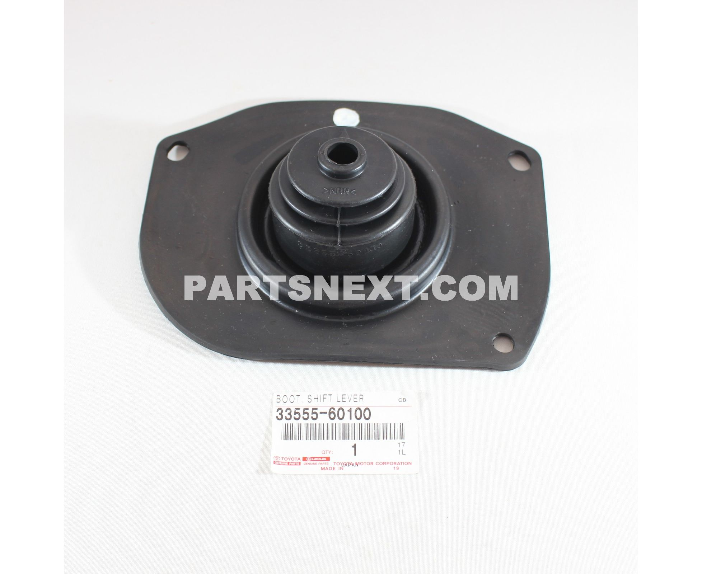

本项目旨在通过物联网传感器、人工智能分析和数字化平台，对深圳老旧小区排水管网进行系统性诊断与精准修复，提升城市排水治理效能。
实施排水智慧化管理技术，场景：老旧住宅小区排水管网诊断与修复。
通过智能化手段实现排水管网的系统性诊断、精准修复和全流程闭环管理。
2025年深圳全年累计处理污水23.17亿立方米《深圳市2025年度污水处理费征收使用情况公示》[S3]，纳入地理信息系统管理的市政排水管渠21709.80公里，市政污水泵站80座。
楼顶管线杂乱缠绕，雨污合流严重。
系统由井位感知层、数据传输层、诊断平台层、闭环处置层组成。重点监测液位、流量、化学需氧量、氨氮。

项目分三个阶段推进，确保从试点到推广的可行路径。试点片区约50个小区，布设12个重点井位。
依据公开中标单价测算。试点片区约50个小区，按每4-5个小区布设1个重点监测井位，共需12个。
| 项目 | 测算依据 | 金额 |
|---|---|---|
| 单个重点井位设备 | 智能井盖980元 + 多参数采集仪12,500元 + 超声波流量计11,500元 + 化学需氧量传感器16,800元 + 氨氮传感器13,500元 = 55,280元/个 | 5.53万 |
| 12个重点井位设备 | 50个小区 ÷ 4个小区/井位 ≈ 12个；12 × 55,280元 | 66.34万 |
| 云平台服务 | 含数据存储、可视化大屏、告警推送、手机端查看，按年服务费 | 5.90万 |
| 系统集成 | 设备安装调试、与现有地理信息系统数据对接、平台部署上线 | 5.85万 |
| 预备费（10%） | 设备运输、现场协调、不可预见费用 | 7.81万 |
排水管网项目的经济价值，主要来自"避免损失"和"少走弯路"。
减少积水、减少冒溢、减少投诉、提升居民满意度
先看清病害，再精准修复。减少反复开挖带来的交通、环境、投诉损失。
通过精准识别混接和入渗，降低污水厂无效处理量。
带动检测装备、软件平台、管网修复和运维服务产业发展。
少积水、少臭味、少冒溢、少开挖。居民满意度提升。
重点井位在线监测覆盖率100%；异常工单24小时内派发；整改复核闭环率90%以上。
少积水、少臭味、少冒溢、少开挖。减少污水冒溢、道路积水和群众投诉。
预计2年内收回投资，此后每年净节约约240万元。
与其等污水冒溢后反复开挖，不如先给小区地下排水做一次智慧体检。